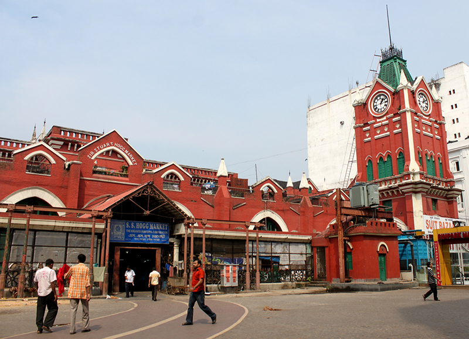
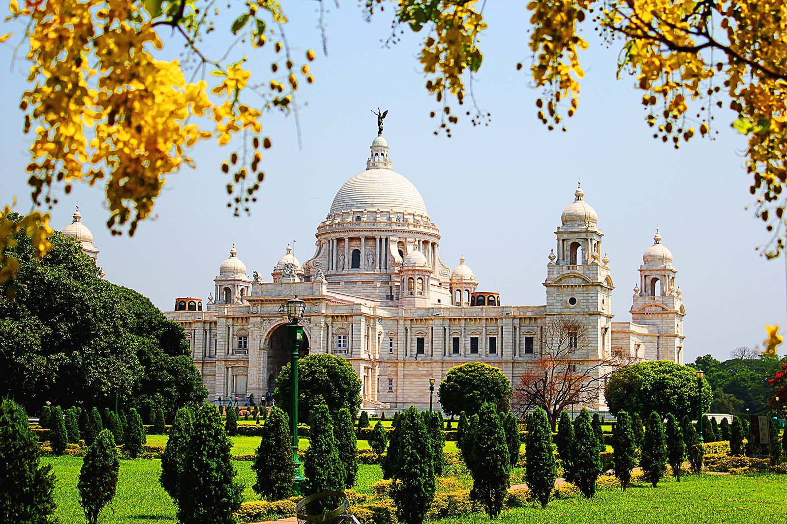
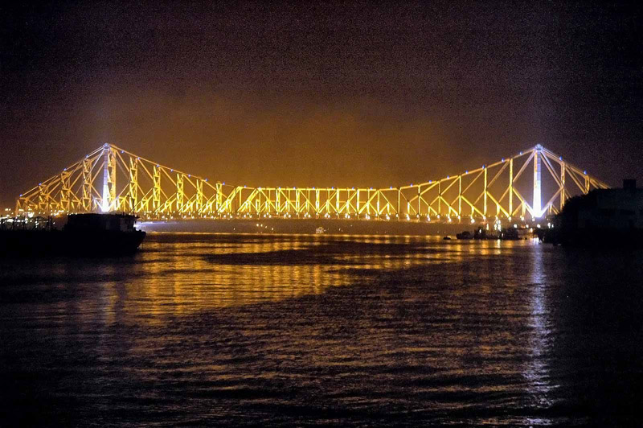
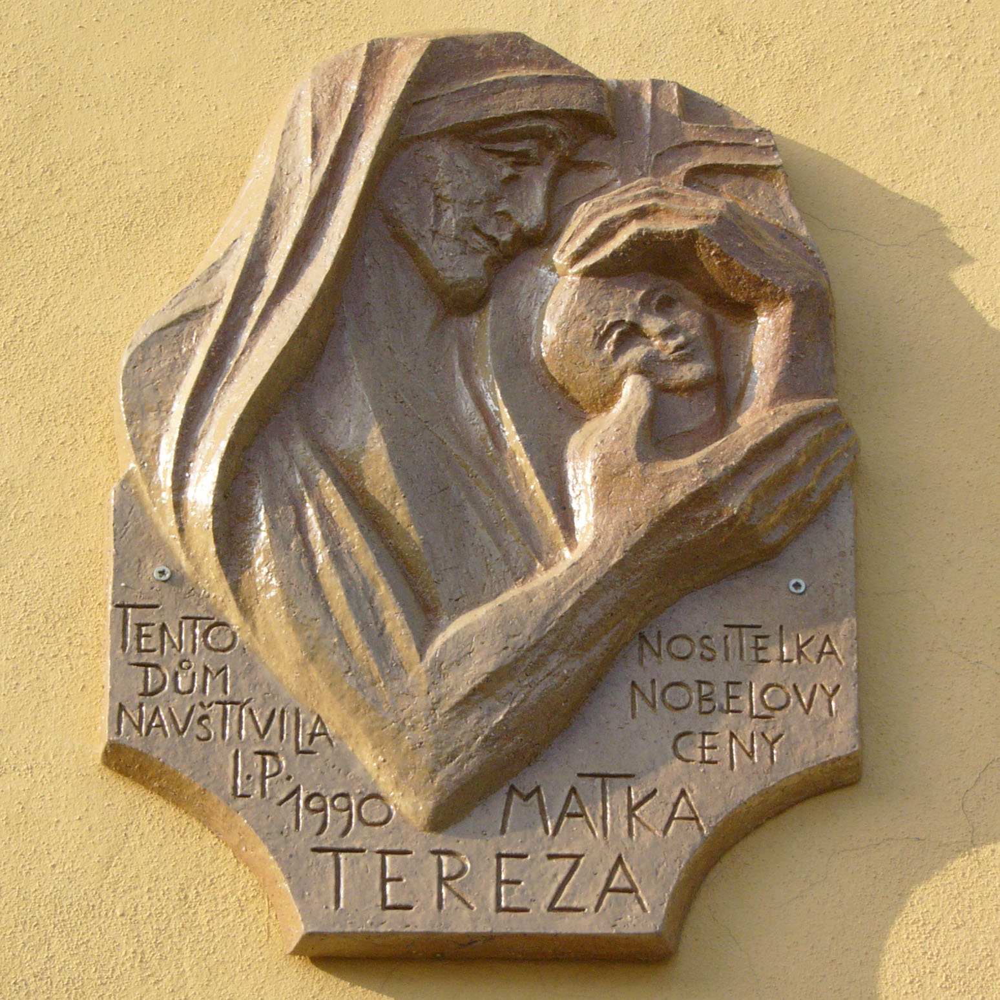

Kolkata (East India)cultural capital of India
|  |
Kolkata is the capital of the Indian state of West Bengal. Located on the east bank of the Hooghly River, it is the principal commercial, cultural, and educational center of East India,
Park Street. This is kolkata’s most famous street which has prominent landmarks, colonial mansions. The night clubs situated in this street is very famous.
New Market. One of the top places to go shopping in kolkata is the New Market in Lindsay Street. You would get anything to buy for a good bargain. Its open Mon-Fri 10am to 8 pm and mornings in Saturdays.
|  |
Victoria Memorial is famous white building built in 1921 by the British Raj. Currently it is a museum housing famous paintings, sculptures, library etc. If you are interested in historical this one is not to be missed.
Mullik Ghat Flower Market is one of the best selling flower market. You can grab stunning photographs. Sacks of flowers and the big sales and the people selling it is never to be missed. It is situated along Strand road near Howrah Bridge
|  |
Howrah Bridge. It is built across the Hooghly River linking kolkata and Howrah. This bridge is special of its own by its construction on a single span without any pylons connecting it to the river bed. Over 150,000 vehicles and 5,000,000 pedestrians use this bridge daily. Wonderful piece of construction!
|  |
Mother Theresa’s Mother House. Mother Theresa who was known as ‘Living Saint’ lived her life here and spent her life for the downtrodden, sick, oppressed and orphans. She founded the Missionaries of Charity and the convent known as Mother house is here in A.J.C Bose Road.